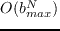
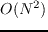
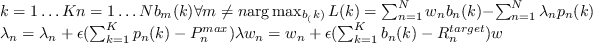

ISB is based on the same Lagrangian decomposition as OSB, but instead of an exhaustive search across the bit-space within the Lagrangian, each line in turn is optimised, i.e a linear search instead of OSB's  -vector-search. It was presentedCendrillon (2005) by Cendrillon and Moonen in 2005 and thoroughly investigated by Yu and LuiWei Yu and R. Lui. (2006) in 2006, and is near-optimal, but is not guaranteed to converge on a global maximum.Cendrillon (2005).
-vector-search. It was presentedCendrillon (2005) by Cendrillon and Moonen in 2005 and thoroughly investigated by Yu and LuiWei Yu and R. Lui. (2006) in 2006, and is near-optimal, but is not guaranteed to converge on a global maximum.Cendrillon (2005).
The improvement in computational complexity is great; OSB has a complexity of
, whereas ISB attains a complexity of , meaning that for slightly more practical bundle sizes, ISB is computationally tractable. The ISB algorithm is shown in figure 11
Appendix 11:
ISB Algorithm
|  |
Andrew Bolster
2011-05-22